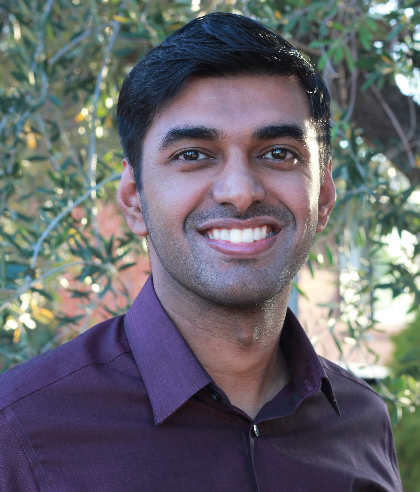

01
Quantum LDPC codes & iterative decoding
Hypergraph-product, lifted-product, and bivariate-bicycle codes; belief propagation, min-sum, soft-syndrome and low-complexity iterative methods; trapping sets and error floors.
QUANTUM ERROR CORRECTION · CODING THEORY · FAULT TOLERANCE
Quantum error correction researcher.
Entrepreneur. Mentor. Speaker.
I'm Nithin Raveendran, a quantum error correction researcher working on quantum LDPC codes, iterative decoding, and fault-tolerant computing. My work moves between mathematical structure, decoder failure modes, circuit-level noise, and the constraints of real hardware.
Assistant Research Professor, University of Arizona Co-Founder, QEC Labs

Tucson, Arizona
01 / BACKGROUND
I am an Assistant Research Professor in Electrical and Computer Engineering at the University of Arizona, where I co-lead NSF-supported work on scalable quantum LDPC code and decoder design (CCF-2420424). I earned my PhD in 2021 studying trapping sets of iterative decoders for quantum and classical LDPC codes.
My research spans theoretical coding questions and implementation: why practical decoders fail, how to exploit quantum-code structure, and how to design algorithms with realistic timing and noise models. I also co-founded QEC Labs in 2025 to explore the engineering and commercialization of hardware-aware QEC decoding.
02 / RESEARCH
From code structure to reliable logical computation.
01
Hypergraph-product, lifted-product, and bivariate-bicycle codes; belief propagation, min-sum, soft-syndrome and low-complexity iterative methods; trapping sets and error floors.
02
Circuit-level noise, repeated syndrome extraction, detector error models, hook errors, finite-precision implementations, and low-latency architectures suited to FPGA development.
03
Fault-tolerant logical Pauli measurements, operator structure, ancilla-assisted measurement gadgets, and circuit-level analysis for QLDPC code families.
04
Entanglement-assisted operations across quantum processors, Bell-pair resources, inter-QPU faults, and decoding across repeated QEC rounds; building on published entanglement-purification research.
With Stavan Jain and Aws Albarghouthi, I coauthored Specifying & Verifying Quantum Error-Correcting Codes (2026), which introduces QECLean, a Lean-based framework for machine-checked QEC-code properties.
03 / SELECTED WORK
Stavan Jain, Nithin Raveendran, Aws Albarghouthi · arXiv preprint
Asit K. Pradhan, Nithin Raveendran, David Declercq, Bane Vasić · arXiv preprint
Asit K. Pradhan, Nithin Raveendran, Narayanan Rengaswamy, Bane Vasić · IEEE Transactions on Information Theory
Michele Pacenti, Nithin Raveendran, Bane Vasić · arXiv preprint
Nithin Raveendran, David Declercq, Bane Vasić · IEEE ICC
Satvik Maurya et al., including Nithin Raveendran · IEEE IISWC
Dimitris Chytas, Nithin Raveendran, Bane Vasić · IEEE Transactions on Communications
Q. Xu et al., including Nithin Raveendran · Nature Physics
N. Rengaswamy, Nithin Raveendran, A. Raina, B. Vasić · Quantum
Nithin Raveendran et al. · EPJ Quantum Technology
Nithin Raveendran et al. · Quantum
Nithin Raveendran, Bane Vasić · Quantum
04 / EXPERIENCE
Research on QLDPC code construction, efficient decoding, error floors, and hardware-aware fault tolerance. Co-PI, NSF CCF-2420424; graduate research mentorship and cross-institution collaborations.
Exploring how QLDPC decoding research translates into reproducible benchmarks, FPGA-oriented architectures, and the system constraints encountered by quantum-computing teams.
Developed work on QLDPC–GKP concatenated coding, soft information, and quantum decoding under noisy measurements.
Studied trapping sets, belief propagation and error-floor estimation in quantum and classical LDPC codes.
PhD, Electrical & Computer Engineering, University of Arizona (2021) · MSc (Engg.), Indian Institute of Science (2015) · BE (Hons.), BITS Pilani (2011)
05 / COMMUNITY
IEEE Quantum Week 2026 — Panelist on Real-Time Quantum Error Correction: Current Milestones and Open Horizon, alongside researchers and industry leaders in Toronto.
ITA 2026 & online workshops — Speaking and QEC session co-organization at ITA; featured talks and panel discussions in webinars organized by Alex G. Lee.
IEEE Quantum Week 2025 — Workshop organizing and session chair on paths to scalable QEC.
IEEE Quantum Week 2024 — Coauthor of a Best Paper Award winner (Quantum Algorithms Track), on non-binary hypergraph-product codes for qudit error correction.
I speak about quantum error correction and the path from research to engineering, drawing on my work as a researcher and entrepreneur. I also mentor graduate, undergraduate, and high-school researchers.
Mentorship highlights — A high-school mentee earned admission to Stanford and selection to RSI; two STAR Lab mentees presented their QEC research at the QEC conference in Santa Barbara. I also mentor PhD students at the University of Arizona.
Learning through play — I developed ÇudoQu, a Sudoku-inspired game that introduces decoding under noise.
06 / GET IN TOUCH
I'm interested in conversations about quantum error correction, fault-tolerant architectures, quantum networking, and research roles that connect algorithms with implementation.